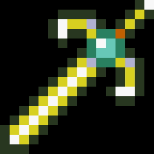

 Fire Emblem - Shadow Dragon
Details
| Playtime | Not Played |
| Last Activity | Never |
| Added | 21/02/2024 3:22:44 |
| Modified | 20/05/2024 22:32:56 |
| Completion Status | Not Played |
| Library | Playnite |
| Source | |
| Platform | Nintendo DS |
| Release Date | 20/04/1990 |
| Community Score | |
| Critic Score | |
| User Score | 0 |
| Genre | Tactical RPG |
| Developer | Intelligent Systems Nintendo R&D1 |
| Publisher | Nintendo |
| Feature | Single Player |
| Links | |
| Tag | |
Description
Beginning development in 1987, it was conceived by designer and writer Shouzou Kaga: he wanted to combine the strategic elements of Intelligent Systems's previous simulation project, Famicom Wars, with the story, characters, and world of a traditional role-playing video game influenced by Kure Software's First Queen (1988). Keisuke Terasaki acted as director and Gunpei Yokoi produced, while the music was composed by Yuka Tsujiyoko. The scale of the game meant that the team needed to find ways around memory storage problems, and make compromises with the graphics and storyline. While initial sales and critical reception were lackluster, it later became popular, launching the Fire Emblem series. The game would later be credited with codifying and popularizing the tactical role-playing genre as a whole.
The game was officially localized and released outside of Japan for the first time on the Nintendo Switch on December 4, 2020 in commemoration of the franchise's 30th anniversary. This updated version features new quality-of-life improvements such as fast-forwarding and rewinding through player and enemy turns, and the ability to create save states in the middle of gameplay. It was available digitally for a limited time until the end of March 2021.